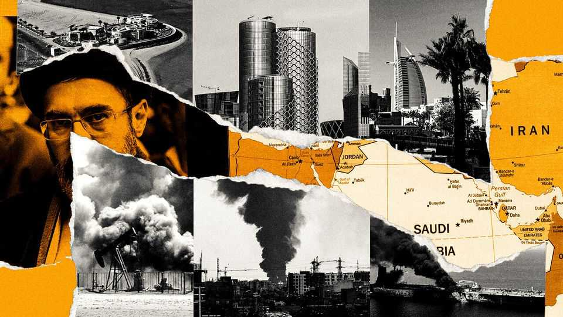
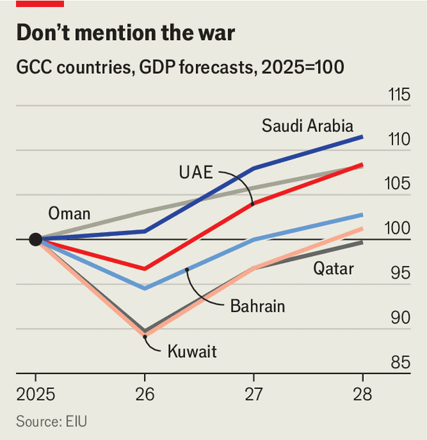
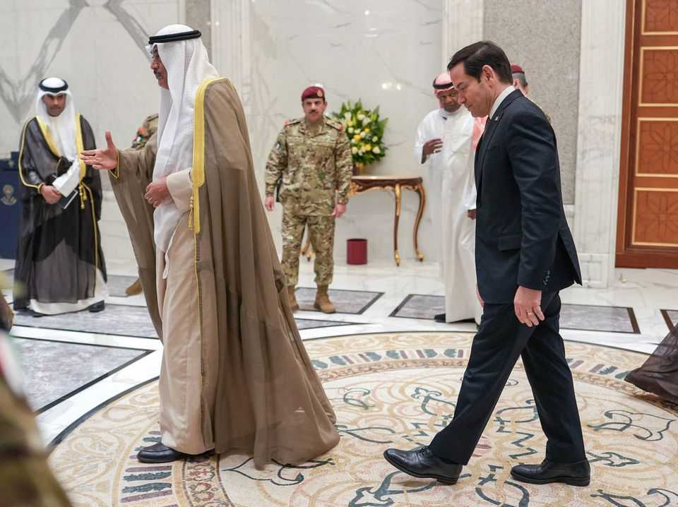
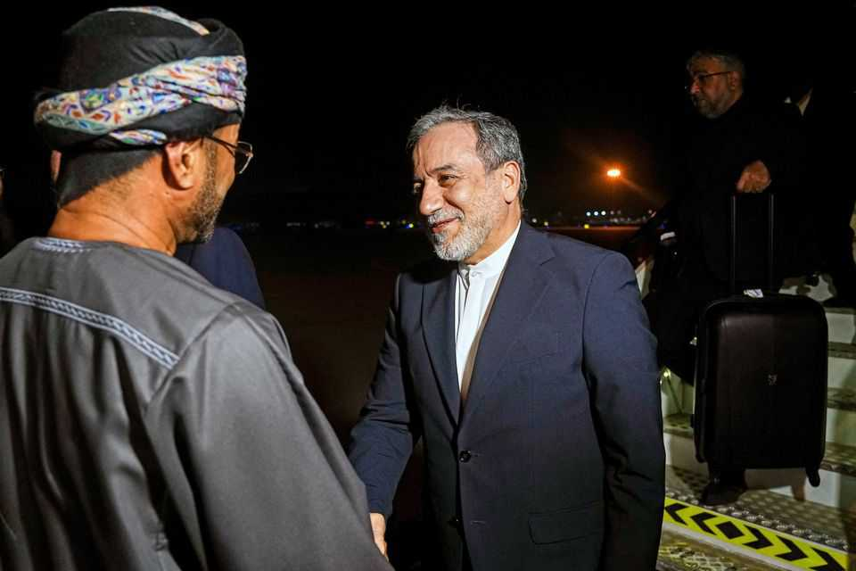

The Gulf’s three post-war challenges
Geography, cash and confidence will decide who recovers, and who drifts
June 25th 2026

JANUARY feels like another lifetime. At a gathering of bankers in Dubai, talk focused on whether the city’s sizzling property market was due for a correction. At a tech conference in Doha, Qatar’s capital, everyone wanted to discuss AI. War was already threatening the Middle East, but no one wanted to believe it would hit home.
For the Gulf Co-operation Council (GCC), a club of petro-monarchies, the months that followed were their greatest shock since 1990, when Saddam Hussein occupied Kuwait. Perhaps the comparison seems overwrought. The first Gulf war killed hundreds of Kuwaiti civilians and caused an ecological disaster when Saddam’s army set fire to oil wells; the consequences of this conflict are less visible.
Thousands of Iranian missile-and-drone attacks caused tens of billions of dollars in damage but, mercifully, few casualties. Though the Strait of Hormuz was shut for almost four months, Gulf residents experienced no serious shortages. It is an odd sort of war when one can still get imported oysters through a blockade.
Yet in some ways, the shock of this Gulf war is greater than the first. In 1990 the GCC was the world’s petrol station. Today it is an outsize player in much from finance to logistics, home to some of the biggest sovereign wealth funds and airlines. Its economies are worth $2.3trn, more than 2% of global output. It is a sanctuary for millions of expats, drawn by the promise of a safe, prosperous oasis in a turbulent region. That model is now in doubt.
What comes next depends in part on America’s talks with Iran. If Donald Trump strikes a lasting deal that ends America’s long conflict with Iran, the shock to the Gulf may soon fade. If fighting resumes, the next round may be more destructive. Few officials in the region expect the war to restart. But nor do they expect a durable peace. They will have to cope with elevated risk for the foreseeable future.

That leaves three challenges: rebuilding confidence; reconsidering ambitious plans for diversifying their oily economies, which never accounted for such a level of risk; and navigating a complex geopolitical moment in which they trust neither America, their longtime protector, nor one another. Some will fare better than others. Gulf states shared a common trauma, but its consequences will be felt unevenly.
At first glance, the United Arab Emirates (UAE) may seem to have suffered the greatest blow to confidence. The seven-member federation, including Dubai, was attacked over 2,800 times, almost as many as the rest of the GCC combined. Close ties with Israel and its leaders’ hawkish stance would seem to leave it permanently atop Iran’s target list in the Gulf.
Many expats in Dubai, however, sound sanguine about both the war and the future. Critics might dismiss this optimism as coerced: the UAE arrested people for sharing news of Iranian strikes on WhatsApp. The question of how many people left during the war is a favourite dinner-party topic in Dubai, and because the emirate does not publish detailed population figures, no one has a clear answer.
Anecdotally, though, there are signs that lots of professionals stayed put: traffic on the motorways and crowded malls. The city is far less transient than in decades past. Many who left probably had no choice, as hotels and other firms that rely on tourists sacked thousands of workers.
Tourism, which accounts for 12% of the UAE’s GDP, will be an early bellwether for broader confidence. Summer is always quiet, but many firms expect a quick rebound once the searing heat eases. But the recovery may be unbalanced. “The Russians and Indians are telling us they’re ready to come back almost immediately,” says a marketing executive. “The Brits? End of 2027.”
It helps that the UAE has deep pockets. Before the war its break-even oil price was just $50 a barrel, far below most of its neighbours. Dubai has already rolled out 2.5bn dirhams ($680m, or 0.5% of GDP) in wartime incentives; it has suspended some taxes on hotel stays and restaurant bills.
It will be harder to restore confidence in smaller Gulf states—perhaps most of all in Bahrain. The island kingdom entered the war with a 146% debt-to-GDP ratio, one of the world’s highest. Its foreign reserves were enough to cover less than two months of imports. Add to that long-simmering tensions between Bahrain’s Sunni monarchy and its Shia majority, which has long complained (rightly) of discrimination.

The war exacerbated both problems. Though oil accounts for just 14% of GDP, it supplies around 50% of government revenue, and Bahrain has exported almost none since March. The UAE gave Bahrain’s central bank a $5bn currency-swap line in April. Further rescues seem likely. Gulf support has helped Bahrain avoid a downgrade of its debt (which was already classified as junk). A $1bn bond issue earlier this month was oversubscribed.
Still, this only adds to the kingdom’s debt burden—it is paying more than 7% on its newest bonds, a full percentage point above its last pre-war issue. Meanwhile, it was not uncommon to hear Bahrainis express sympathy for Iran during the war, even as the regime bombed their country and mused about annexing it.
The tourism sector has long underperformed, and a mix of instability and insolvency will make it hard to woo new visitors. Other sectors look wobbly as well. Bahrain has tried to position itself as a logistics hub for businesses serving the Saudi market. Uncertainty around Hormuz may make that risky. Unlike the UAE, which plans to expand the ports on its east coast, Bahrain has no alternative to the strait.
Indeed, one lesson from the war is that geography matters. Saudi Arabia’s size helped it weather the war better than most of its neighbours. Its big cities were largely spared Iranian attacks, and its air space never closed. Some firms temporarily shifted staff from Dubai to Riyadh. A large internal market helped compensate for a drop in foreign travellers—and the tourism sector relies mostly on religious pilgrims, a stickier business than the leisure market.
The kingdom was already scaling back some of its most ambitious projects, particularly Neom, a futuristic city being built in the north-west. Instead of mirrored skyscrapers and ski resorts in the desert, the kingdom is trying to reposition itself as a logistics hub, with a modern port linking other Gulf states to the Red Sea. That is a sensible pivot. It can make a similar pitch around AI: data centres built on its west coast would be 1,500km away from Iran, compared with just 200km for other Gulf countries. Still, ports and data centres will not draw the sorts of rich expats the kingdom had expected to attract with Neom. Nor will they provide many jobs for Saudis, who are hardly eager to work as stevedores.
Before the war, most Gulf countries had hoped to diversify by emulating Dubai: wooing wealthy entrepreneurs and building service economies based on tourism, finance and tech. In a newly risky Gulf, they may not be able to. “The war hasn’t killed the Dubai model, but it might kill the idea that everyone in the Gulf can be Dubai,” argues a European diplomat.

Qatar spent hundreds of billions of dollars to build homes, hotels and infrastructure ahead of the 2022 football World Cup. The tournament left it with a glut of everything. Kuwait has the opposite problem: decades of political paralysis have left it unable to build much of anything. Extended regional uncertainty may leave both adrift. Their economies are set to shrink by double digits this year, and may not return to pre-war GDP until 2028 (see chart).
Oman has always been the odd man out in the Gulf, a middling oil producer with an iconoclastic foreign policy. It enraged its neighbours over the past few months by showing sympathy to Iran and entertaining the idea of working with the Islamic Republic to charge tolls in Hormuz. That may have shielded Oman from heavy Iranian attacks—but carries its own risks.

The GCC insists it is a bloc of brotherly countries, but it is prone to dramatic ruptures: less than a decade ago Bahrain, Saudi Arabia and the UAE imposed a blockade on Qatar to punish it for supporting Islamist groups. In Washington, meanwhile, Republicans have talked about imposing sanctions on Oman (and Mr Trump has bizarrely mused about bombing it).
In reality, the GCC has always done better as a travel-and-trade zone than a political bloc. The war exposed this lack of unity—and may heighten it, for example with their armed forces. America has long pleaded with Gulf states to integrate their air defences. A lack of trust hindered that. The need to husband scarce interceptors led to a beggar-thy-neighbour mentality.
Nor do they agree on diplomacy. Qatar played a key role in negotiating the initial deal between America and Iran, signed on June 17th. In the days leading to it, all six Gulf countries urged Mr Trump to take the deal, fearing the alternative was more war. But in private, many officials lament it as a terrible agreement.

Saudi Arabia has now joined Turkey, Egypt and Pakistan to try to influence what happens next. But the Saudis acknowledge that this coalition is ad hoc and weak: none of their partners has much leverage to sway Iran into making concessions. The UAE has largely stayed out of the diplomatic scrum. It views Iran as an irreconcilable foe and plans to focus more on building up deterrence than what it sees as futile diplomacy. All this means there is no common GCC position on Iran.
At the same time, they have lost faith in America: it is too erratic to be trusted as a security guarantor, yet too large to be replaced. Everyone will search for new middle-power allies. China could expand its regional diplomatic role (though it has been loth to). Relations with Israel will probably depend on its election this autumn. Well-connected Saudis say the kingdom is still open to normalising ties, but only if a new Israeli government offers an alternative to endless war.
For decades, Gulf rulers offered their subjects a bargain: stay out of politics and we will keep you safe and prosperous. Oil and the promise of American protection are no longer enough to underwrite that contract. The war did not tear it up—but it has frayed it like never before. ■
Sign up to the Middle East Dispatch, a weekly newsletter that keeps you in the loop on a fascinating, complex and consequential part of the world.